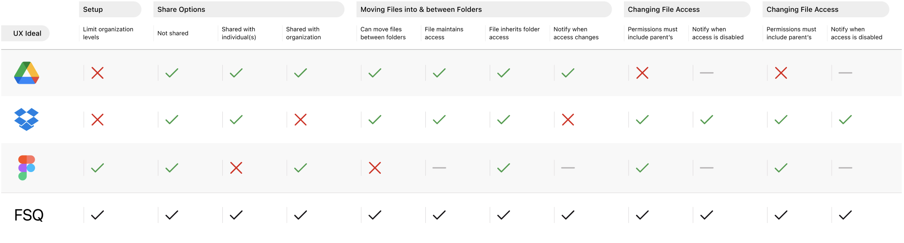
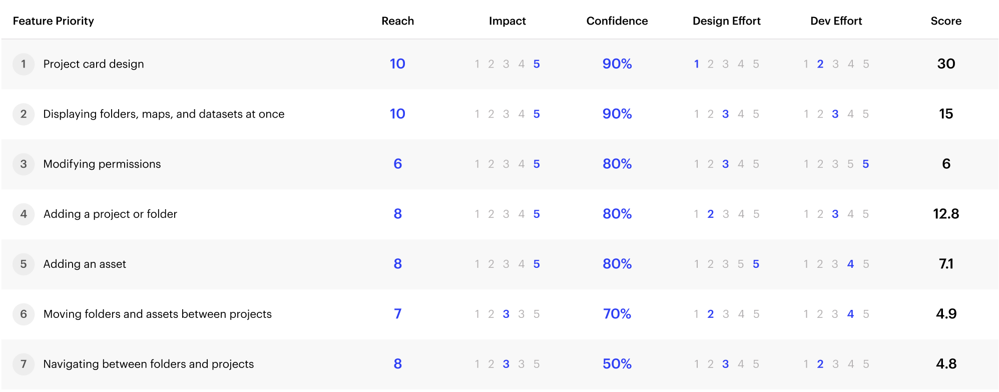

Enabling users to organize and share their spatial data
User Research
UI & UX Design
Concept Testing
System Architecture
The Projects Portal was one of the largest features added to Studio, Foursquare's data visualization and analytics platform. Beyond desiging and shipping a complex file-management experience, this work migrated Studio onto Foursquare's new design system, simplified Studio's information architecture, and laid the foundation for future product unification efforts at the company.
Studio is used by developers and marketers in the geospatial, internet, avation, and public sector spaces. These customers create maps using their own data or data purchased from Foursquare. When working on complex initiatives, our users needed a way to organize, package, and redistribute several maps and datasets at once. Thus, the notion of Studio Projects emerged.
Defining Scope
Discovering the Problem-Space
User interviews were conducted early on in the research process to better understand existing behaviors, pain points, and aspirations around this feature. Consulting customers and internal stakeholders illustrated feature complexities and knowledge gaps, informing where it'd be most beneficial to dedicate additional research efforts.
Learning from Competitors
Permissions was a particularly complex problem to solve for. We assesed the permissions logics of common products against a set 'UX Ideals' that reinforces our users' aspirations for this feature. This allowed us to design a custom framework that only borrows what is most useful for our users. We validated this framework with other product managers and back-end engineers to reduce any possible implementation or cross-product integration frictions.

Prioritizing Features
As design requirements were shaping up in our PRD, my engineering leaders and I met to establish priority level so that we could best meet the feature release date. We used the R.I.C.E. framework as an initial basis, adding greater priority to features that had downstream design or engineering implications.

Information Architecture
Ensuring Future Features don't Break the UX
Adding an additional tab for Projects was beginning to overwhelm our primary navigation. We decided to consolidate 'Maps' and 'Datasets' into a singular 'Workspace' tab. This created a more a consistent hierarchy in-line with Projects and prevented the information architecture from breaking with the addition of any more asset types.
FSQ Design System
Mapping between Design Systems
Cupcake, the name of Foursquare's design system, had just released its first version at the start of the design phase. Our team decided to design and build this feature using Cupcake to increase efficiency and prevent future design debt. I created a conversion between the new and old design system as a reference for any UI reskins and to show how much redundancy our new design system eliminates.
Design Iterations
Grid System & UI Panels
Redesigning Studio's information architecture also highlighted some areas of improvement within Studio's UI. Aside from aligning the new UI to the Cupcake grid, we also wanted to place secondary navigation in a more intuitive location. We ultimately landed on a design that followed a natural progression from reading left to right, from primary navigation down to an asset's information panel.
Card Redesign
The asset card required a major redesign to allow bulk actions and tags. This new card design also needed to accomodate various card types, including project and folder cards. We tested versions of the card in maze.co to inform and validate hover styles, touchspace sizes, and interaction patterns. To prevent too much information density, some metadata was removed from the card view. This metadata was more important to our highly technical users, which prompted a design of a list-view.
UXR Takeaway
Visually reinforce interaction destination to improve user confidence
UXR Takeaway
Provide sufficient touchspace to avoid misclicks on the card
Problem Discovery
Design a list view for users who need to see more metadata upfront
Metadata Progressive Disclosure
Card sorting tests were conducted to determine metadata priority in the UX and list-view responsive design, with metadata categories, number of categories, and ultimate ranking differing by asset types.
Key Question
Which metadata are most important for super-users to see for each asset type?
UXR Approach
Ranked card sorting activity
List View Specs and Responsiveness
The list view allowed for more assets and metadata to be viewed at once, which caused an information density concern. To reduce the visual load, we designed the column widths to align with our design system grid for all desktop sizes and breakpoints.
Handoff
Design Documentation & QA
As designs finalized, I ran handoff sessions with my engineering team to ensure design documentation properly articulated areas most complex to them. To my surprise, I was able to spend less energy with spacing and sizing specs, and more time outling core user flows and component interaction styles. I also used the design system migration as an opportunity to have my engineers contribute to our component development efforts.
Mocks for Sales & Internal Use
I reached out to our sales representatives to discover which views or experiences would most encourage potential customer buy-in. Since the Projects Portal was a fairly complex feature, this informed where to prioritize final mock and prototype efforts. These artifacts were also shared internally to showcase the our team's work and our design system's impact.
Impact
Advancing our Cupcake Design System
Studio Projects advanced current and future design system efforts for the Foursquare organization at large. This feature helped us implement components and validate the system's visual impact. As a data platform, this feature also informed smaller variant sizes and net new components.
Informing a Unified Platform
The idea of projects and corresponding permissions research helped inspire upcoming product unification efforts. Aligning on permissions with other Foursquare products early-on in the research process mitigated future friction and design debt.